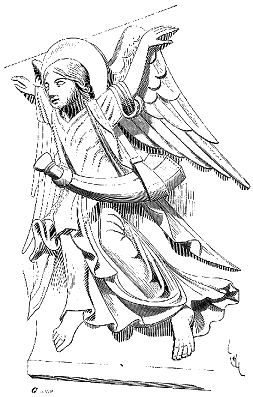

Eugène VIOLLET le DUC
Dictionnaire raisonné du mobilier.OLIFANT, s. m. Corne d'une grande dimension, faite habituellement d'une dent d'éléphant, garnie de viroles de métal pour la suspendre au côté droit. L'olifant était une corne de guerre et de chasse ; il servait à donner des signaux, à rallier les troupes, à annoncer l'approche d'un ennemi.
L'olifant était donc un instrument que portaient les chefs et qu'ils embouchaient, à la guerre, pour réunir leur monde ou pour prévenir de leur approche. Le guetteur du château n'a qu'une corne ou un cor, pour donner des signaux ; l'olifant était la trompe du noble, du seigneur ayant des barons sous ses ordres. Tout le monde connaît la légende de Roland. Lorsqu'il combat dans les défilés de Roncevaux et qu'il voit ses compagnons morts pour la plupart et met l'olifant à sa bouche.
 Figure 1 Le héros tient à son olifant autant qu'à son épée ; lorsqu'il sent la mort venir, ne pouvant briser Durandal, il met son cor en pièces. Puis se couche sous un pin pour mourir.
L'olifant était alors une marque distinctive de commandement, de dignité, que les grands, seuls, portaient à la guerre, et il était déshonorant de laisser prendre cet instrument considéré comme noble. Sur l'un des corbeaux d'une des portes de la façade de l'église abbatiale de Vézelay, un ange qui annonce la naissance du sauveur, porte un olifant en bandoulière (fig. 11). Ce cor est façonné à pans.
Les olifants d'ivoire étaient souvent richement sculptés ; nos collections publiques et privées en conservent un certain nombre d'une époque très ancienne (Xe au XIIe siècle), sur lesquels sont figurés en bas-reliefs, des chasses, des animaux réels ou fantastiques. La plupart de ces objets ont été plusieurs fois gravés2 ; ils affectent tous la même forme, imposée d'ailleurs par la courbure de la dent d'éléphant.
Notes :
(1) Premières années du XIIe siècle.
(2) Album du Sommerard. - Alex. Lenoir, Monuments français. - Voyez le musée de Cluny. Voyez le bel olifant de la collent. de M. le duc de Luynes, cabinet des médailles, Biblioth. impér. ; celui du musée de la ville de Puy en Velay.